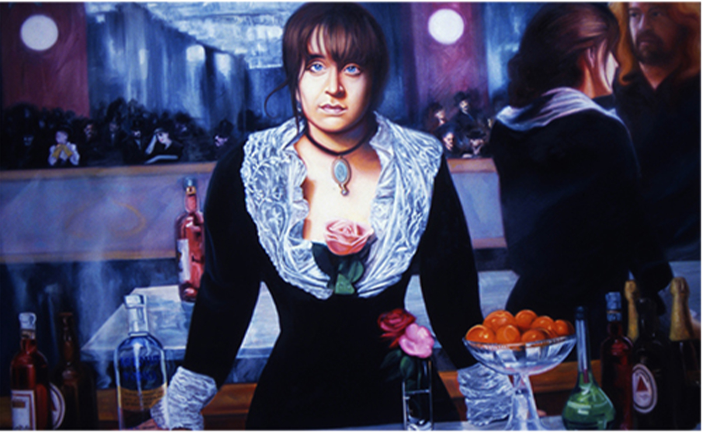

Barmaid (1994)
Home
1990s
1994

Title:
Barmaid
Date:
1994
Medium:
Oil on canvas
Dimensions:
48 × 66 inches
Work ID:
RE-000204
Signature / marks:
Signed "ENGLISH" lower left.
Notes
This work references Édouard Manet’s
A Bar at the Folies-Bergère
.
Public domain image.